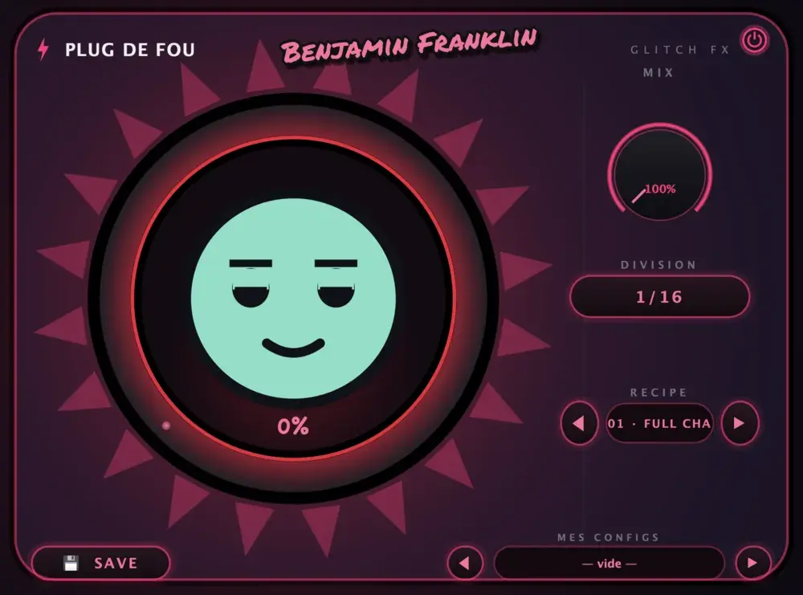
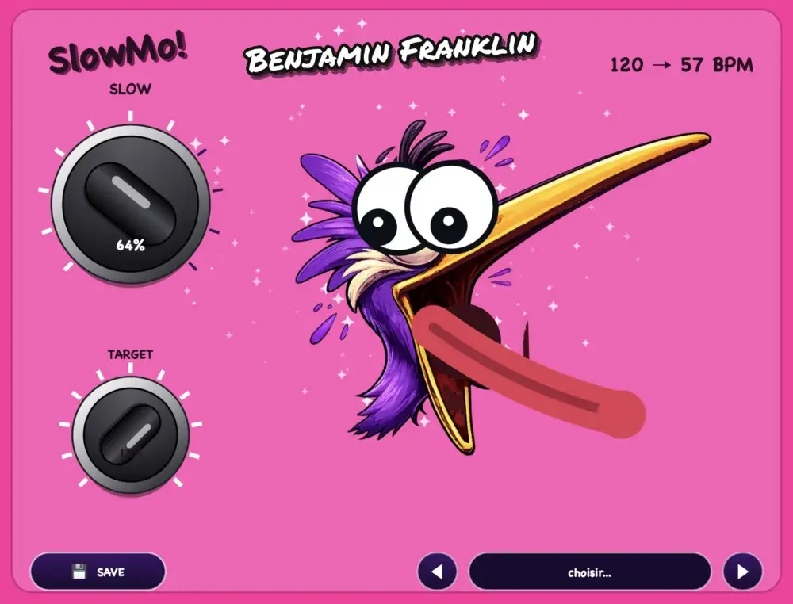
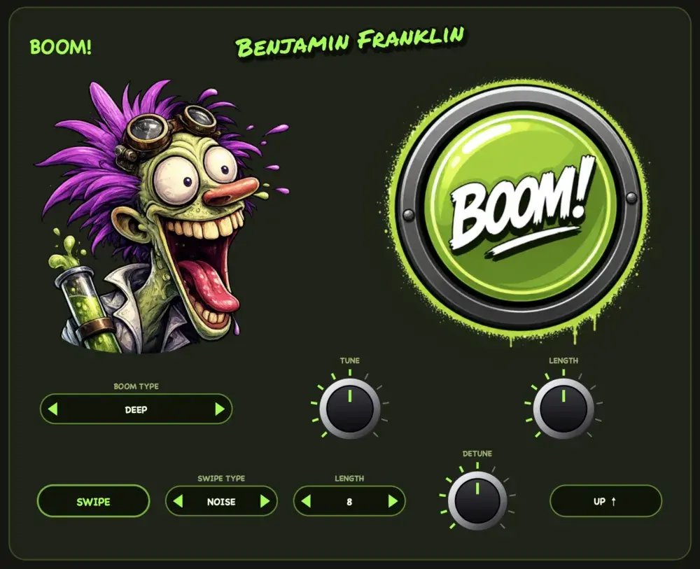

#01
Plug de fou
Le glitch qui pète les plombs. En rythme.
Six machines à chaos calées sur le tempo de ton morceau : stutter, bitcrush, tape stop, reverse, gate et pitch glitch. Tu tournes le gros bouton CHAOS, et GLITCH-O, la mascotte, commence à stresser. Plus il transpire, plus ça part en vrille.
- 20 recettes prêtes à l'emploi pour démarrer en une seconde
- DIVISION de 1/4 à 1/32 : du hachage tranquille au vrai chaos
- MIX pour doser le désastre
- Tes configs sauvegardées, pour retrouver ton chaos préféré
Quel Mac j'ai ? menu Pomme > À propos de ce Mac : « Puce » = Apple Silicon, « Processeur Intel » = Intel.


#02
SlowMo!
Le ralenti façon film d'action. Sans voix de démon.
Tu veux ralentir tout le morceau dans le break, puis claquer le drop à pleine vitesse ? SlowMo ralentit le son sans changer sa hauteur (time-stretch). Pas de voix qui descend dans les graves, pas de canard enroué. Juste un ralenti propre, et un oiseau violet qui perd la tête.
- 2 boutons, c'est tout : SLOW et TARGET
- Affichage du tempo en direct : 120 → 57 BPM
- Parfait pour les breaks, les intros et les fausses fins
- Retour au tempo au drop, comme si de rien n'était
Quel Mac j'ai ? menu Pomme > À propos de ce Mac : « Puce » = Apple Silicon, « Processeur Intel » = Intel.
#03
Boom!
Le savant fou des drops.
Boom fabrique tes impacts de drop : sub boom, downlifter, uplifter. Et comme le son est généré (pas un sample étiré), il reste propre jusqu'à 128 mesures, calé pile sur ton tempo. Les samples de risers ne vont jamais aussi loin et sonnent comme une casserole une fois étirés. Boom, lui, ne casse pas.
- Un gros bouton BOOM! (oui, on appuie dessus)
- Sub boom réglable : type, hauteur, longueur, désaccord
- Swipe montant ou descendant, de 1 à 128 mesures
- Toujours synchro avec le tempo de ton projet
Quel Mac j'ai ? menu Pomme > À propos de ce Mac : « Puce » = Apple Silicon, « Processeur Intel » = Intel.
